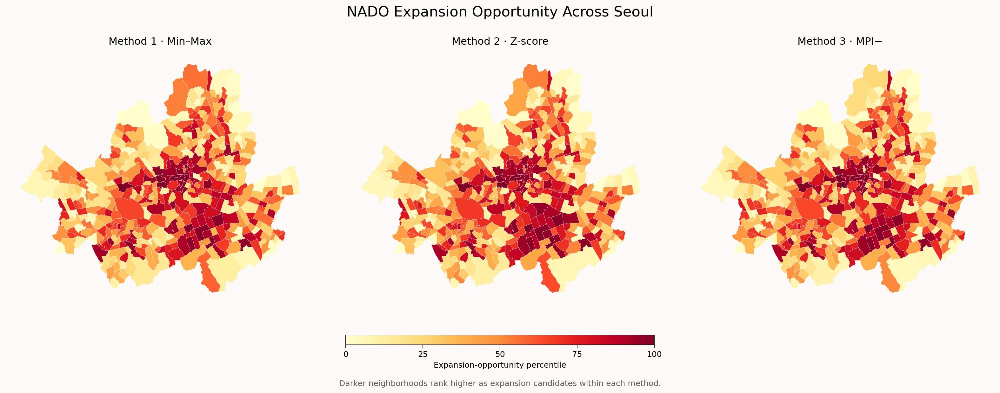
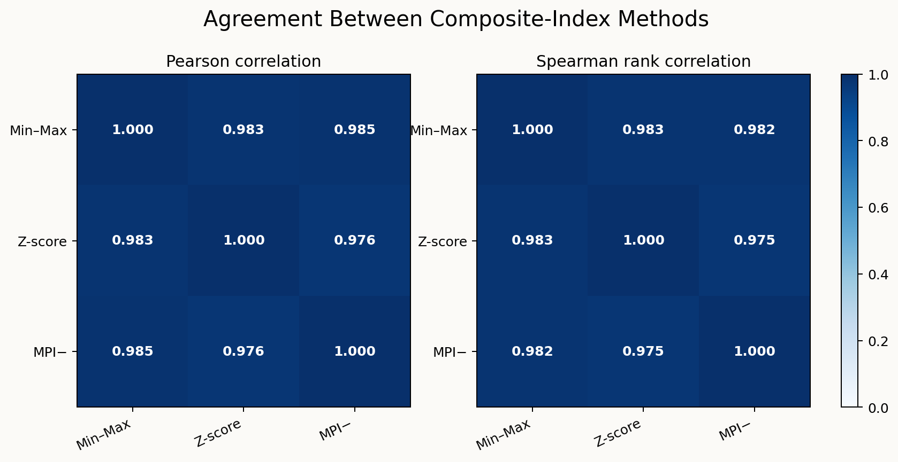
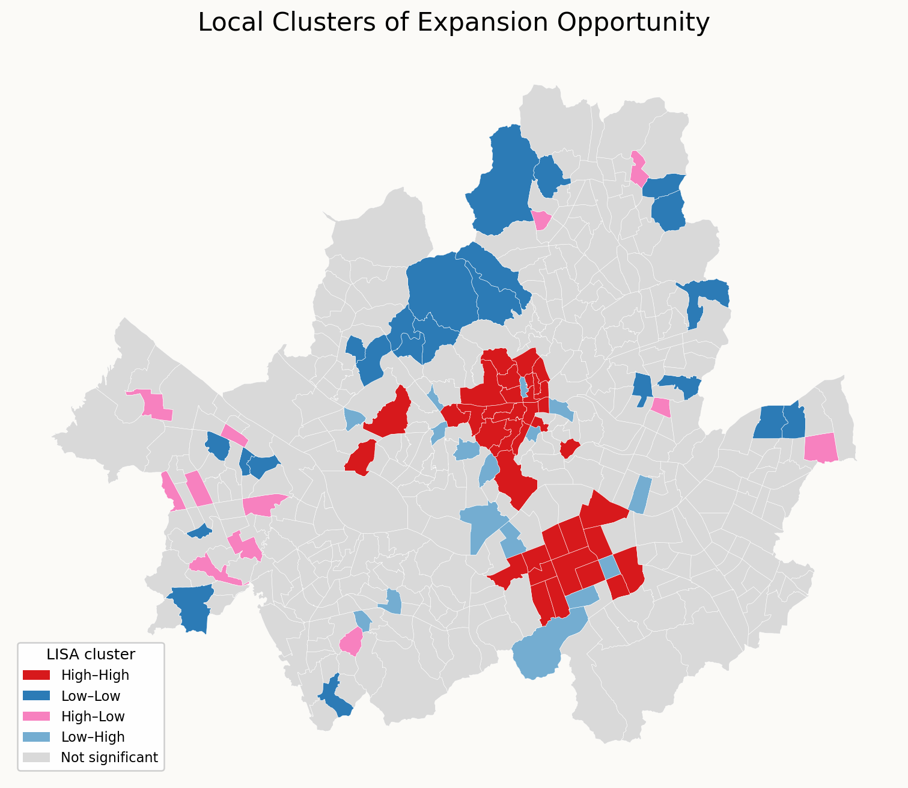

NADO connects learners with in-person English-conversation teachers. As I considered where the service should expand next, I wanted a decision tool that went beyond intuition: which neighborhoods combine unmet market opportunity, room for affordable differentiation, and enough public-transit access to make in-person lessons practical?
Research question: Which administrative neighborhoods in Seoul offer the strongest combination of demand–supply opportunity, price opportunity, and operational accessibility for NADO?
The result is the NADO Seoul Expansion Opportunity Index. A higher score means that a neighborhood looks more promising as an expansion candidate; it does not mean that its current English-education access is better.
What the index measures
I organized the index into three equally weighted pillars. The transit pillar first averages its two component indicators, preventing transportation from receiving twice the weight of supply or price.
| Pillar | Indicator | Why it matters | Opportunity direction |
|---|---|---|---|
| Demand–supply | English institutions per 10,000 residents aged 40–69 | Measures competing supply relative to NADO's primary historical customer group. | Lower is better |
| Price | Median listed tuition | Higher local tuition may create an opportunity for NADO to compete by offering a more affordable alternative. | Higher is better |
| Operational access | Bus-stop density and unique-station density | Dense transit makes in-person matching more feasible for learners and teachers. | Higher is better |
The source data combine Seoul academy and tutoring-center records, living population estimates, bus-stop locations, subway-station locations, and an administrative-dong boundary file. Academy addresses were geocoded and then assigned to the project SHP polygons through a spatial join, so every dataset uses the same geographic unit.
Listed tuition was available for 1,323 institutions. One institution can report several courses—such as different levels, schedules, or class types—with a separate price for each. Splitting those lists produced 8,387 course-price rows; after removing seven zero- or one-won placeholders, 8,380 usable entries remained. I first calculated the median price within each institution and then the median across institutions in each dong, so an institution with more listed courses did not receive extra weight. Tuition was observed directly in 322 dongs; the remaining 103 used their district median and are marked as imputed.
Before scaling, I used log1p on nonnegative indicators with a long
right tail. In plain terms, this compresses unusually large values while keeping
zero valid, so a few extreme neighborhoods do not dominate the index. I also
winsorized each indicator at the 1st and 99th percentiles: values outside those
cutoffs were capped at the cutoff values rather than deleted.
Three ways to build the composite index
- Min–Max with equal weights. Each oriented pillar is rescaled from 0 to 100, then the three pillar scores are averaged.
- Z-score with equal weights. Each oriented pillar is converted to standard deviations from its mean, then averaged.
-
Mazziotta–Pareto Index, negative penalty (MPI−). Pillars are
standardized around 100 with a standard deviation of 10. The index subtracts
an imbalance penalty:
mean − standard deviation × coefficient of variation. Put simply, this places all three pillars on the same report-card scale, with an average of 100. It starts with a neighborhood's average pillar score and subtracts more points when its pillars are far apart. A neighborhood that is solid across all three pillars can therefore outrank one that is excellent on one pillar but weak on the other two.

Do the methods agree?
Yes. Pearson correlation measures whether the numerical scores from two methods rise and fall together in an approximately linear way. Spearman rank correlation ignores the score units and compares only the neighborhood ordering. These are standard statistical measures used here as a robustness check—not additional inputs to the index or components of the Mazziotta–Pareto method. Pearson correlations range from 0.976 to 0.985, and Spearman correlations range from 0.975 to 0.983. The broad spatial pattern is therefore robust to the scaling and aggregation choice, although individual rankings still move. Replacing the 40–69 population denominator with ages 20–69 also produces a Spearman correlation of 0.996, suggesting that the overall pattern is not driven by one narrow age definition.

Top and bottom five neighborhoods
The table reports each method's five highest- and lowest-scoring dongs. Scores are method-specific and should not be compared across columns as if they shared the same unit.
| Method | Top 5 expansion candidates | Bottom 5 |
|---|---|---|
| Min–Max |
1. 서교동, 마포구 (77.25) 2. 회현동, 중구 (75.68) 3. 을지로동, 중구 (73.74) 4. 소공동, 중구 (73.07) 5. 반포1동, 서초구 (72.81) |
1. 암사2동, 강동구 (16.94) 2. 중계본동, 노원구 (19.18) 3. 진관동, 은평구 (19.76) 4. 항동, 구로구 (20.82) 5. 삼전동, 송파구 (20.89) |
| Z-score |
1. 서교동, 마포구 (1.85) 2. 반포1동, 서초구 (1.55) 3. 도곡2동, 강남구 (1.52) 4. 회현동, 중구 (1.41) 5. 소공동, 중구 (1.34) |
1. 암사2동, 강동구 (−1.19) 2. 상계3·4동, 노원구 (−0.99) 3. 평창동, 종로구 (−0.98) 4. 진관동, 은평구 (−0.95) 5. 등촌2동, 강서구 (−0.91) |
| MPI− |
1. 서교동, 마포구 (117.66) 2. 회현동, 중구 (115.90) 3. 반포1동, 서초구 (115.53) 4. 을지로동, 중구 (114.98) 5. 소공동, 중구 (114.65) |
1. 암사2동, 강동구 (87.52) 2. 중계본동, 노원구 (88.18) 3. 평창동, 종로구 (88.29) 4. 상계3·4동, 노원구 (88.77) 5. 진관동, 은평구 (88.96) |
서교동 ranks first under all three methods. Central neighborhoods including 회현동, 을지로동, and 소공동 repeatedly appear near the top, while 암사2동 is last under every specification. For the final decision tool, I use MPI− because it explicitly penalizes a neighborhood that performs well on one pillar but poorly on the others.
AI-assisted extension: a LISA map
As an additional AI-assisted analysis, I calculated Local Moran's I using Queen contiguity and 999 conditional random permutations. LISA asks whether high- or low-opportunity dongs are surrounded by neighbors with similar values, revealing clusters that a ranked table cannot show. Here, “high” and “low” mean above or below the Seoul-wide average MPI− score, not an absolute business threshold.
Kyle Walker's Python
example provided the reference workflow: Queen-contiguity spatial weights,
Local Moran's I, conditional permutations, quadrant labels, and a 0.05
pseudo-p-value threshold. The final analysis uses
libpysal.weights.Queen and esda.Moran_Local(...).p_sim
so its significance test follows that implementation directly. The setting is
different—Seoul administrative dongs and MPI− expansion scores here, rather
than U.S. Census tracts and median age. Walker also uses GeoPandas
.explore() for an interactive map. I retained a static map because
the assignment requires a LISA map; interactivity changes how the result is
explored, not how Local Moran's I is calculated.

- High–High: a high-opportunity dong surrounded by high-opportunity neighbors—a broader cluster of strong candidates.
- Low–Low: a low-opportunity dong surrounded by low-opportunity neighbors—a cluster of weaker candidates.
- High–Low: a high-opportunity dong surrounded by low-opportunity neighbors—a positive spatial outlier.
- Low–High: a low-opportunity dong surrounded by high-opportunity neighbors—a negative spatial outlier inside a stronger area.
- Not significant: the permutation test does not provide enough evidence that the observed local pattern is more distinct than chance at
p < 0.05.
What I would use—and what I would not claim
This index is a screening tool, not an automatic expansion decision. It gives NADO a defensible shortlist for field research, teacher recruitment, and a small pilot. A high score does not prove that residents will enroll.
- Living population is a proxy for potential demand, not observed purchase intent.
- Public academy records approximate competing supply but do not perfectly isolate adult conversation programs.
- Tuition is partially observed, and 103 dong-level values require district-median imputation.
- Transit density measures geographic availability, not actual travel time or teacher schedules.
- Keyword-based academy classification may contain false positives or false negatives.
The next business step would be to validate the MPI− shortlist with a small, consistent experiment: identical advertisements, teacher availability, and conversion tracking across several high-, middle-, and low-ranked neighborhoods. That would turn the current opportunity index into a model informed by observed NADO demand.